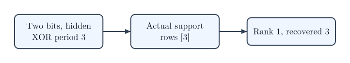
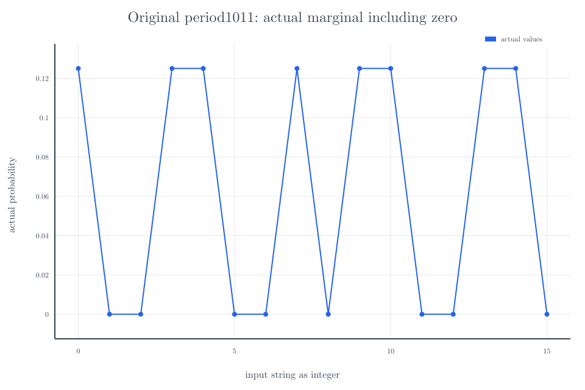
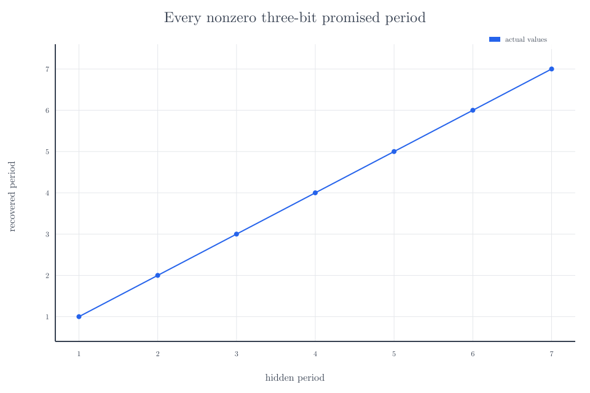
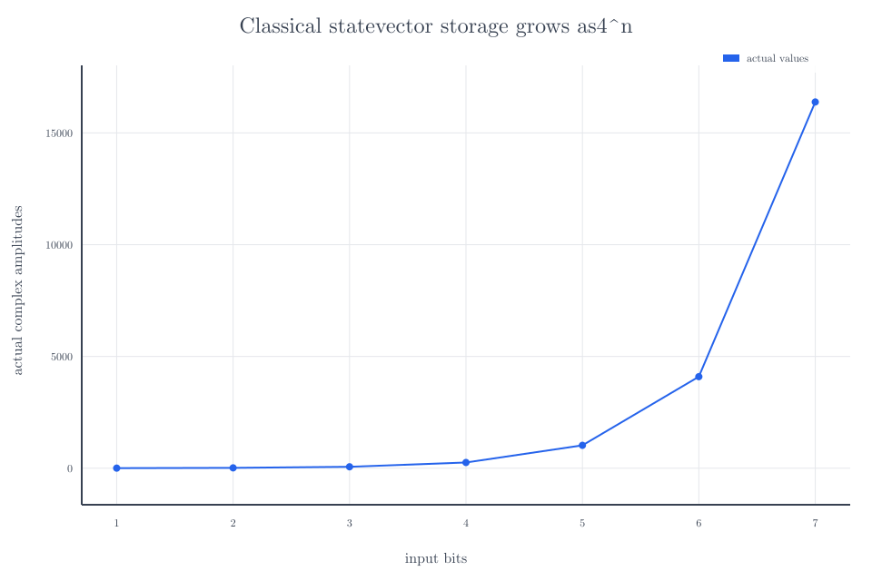

Simon: actual probability support and binary recovery
Abstract
A promised two-to-one black box hides a nonzero XOR period that must be recovered from equal outputs. Quantum interference makes input measurements orthogonal to that period. This classical statevector demonstration computes the full marginal, recovers the period from its support, and retains the original four-bit period1011.
Mechanism and mathematical scope
For the canonical promised function f(x)=min(x,x XOR s), each output pairs x and x XOR s. After Hadamards on the input register their amplitudes add with a phase factor1+(-1)^(y dot s), so forbidden parity cancels:
Zero is a valid measurement with positive probability. The historical figure incorrectly omitted it and substituted unit bars for probabilities. Here all2^n marginal entries are actual computed probabilities, including zero. The legacy observed_y field names enumerated nonzero support, not sampled observations. Their binary row rank is n-1, leaving a one-dimensional nullspace whose nonzero vector is s.
The quantum query advantage concerns actual oracle measurements and enough independent rows, in expectation order n queries. This simulator enumerates full support using two registers with4^n amplitudes and is exponentially expensive classical computation. It neither samples observations nor demonstrates quantum runtime on hardware. Low-order bit indices match native gate indexing.
A tiny actual producing history
The table and native concept diagram read the same producing execution. Every block below is a complete editable C++ program.
#include <dm/dm.hpp>
int main() {
namespace a = dm::algorithms;
namespace g = dm::graphics;
std::filesystem::create_directories("build");
auto r = a::simon_trace(2, 3);
std::print("| y | actual probability |\n| ---: | ---: |\n");
for (std::size_t y = 0; y < r.probabilities.size(); ++y)
std::print("| {} | {} |\n", y, r.probabilities[y]);
std::print("\n| actual pivot bit | actual reduced rows |\n| ---: | --- |\n");
for (const auto &s : r.reduction)
std::print("| {} | `{}` |\n", s.column, s.rows);
g::Diagram concept_diagram(48, 1100);
concept_diagram.node("n0", {0, 0}, "Two bits, hidden XOR period 3");
concept_diagram.node("n1", {5, 0},
std::format("Actual support rows {}",
r.result.observed_y));
concept_diagram.node("n2", {10, 0},
std::format("Rank {}, recovered {}", r.rank,
r.result.recovered_period));
concept_diagram.edge("n0", "n1").edge("n1", "n2");
concept_diagram.save_svg("build/simon_tiny.svg");
}| y | actual probability |
|---|---|
| 0 | 0.49999999999999967 |
| 1 | 0 |
| 2 | 0 |
| 3 | 0.49999999999999967 |
| actual pivot bit | actual reduced rows |
|---|---|
| 0 | [3] |

The retained original experiment
#include <dm/dm.hpp>
int main() {
namespace a = dm::algorithms;
namespace g = dm::graphics;
std::filesystem::create_directories("build");
auto r = a::simon_run(4, 0b1011);
std::vector<double> x, y;
std::print("| y (integer) | actual marginal probability |\n| ---: | ---: |\n");
for (std::size_t i = 0; i < r.probabilities.size(); ++i) {
std::print("| {} | {} |\n", i, r.probabilities[i]);
x.push_back(i);
y.push_back(r.probabilities[i]);
}
std::print("\nOriginal hidden1011 recovered {}; nonzero support `{}`; rank {}.\n",
r.result.recovered_period, r.result.observed_y, r.rank);
auto plot = g::RPlot::create();
plot.lines(x, y, "actual values", {37, 99, 235}).points(x, y, {37, 99, 235},
4).title(
"Original period1011: actual marginal including zero").x_label(
"input string as integer").y_label("actual probability");
plot.save_svg("build/simon_original.svg");
}| y (integer) | actual marginal probability |
|---|---|
| 0 | 0.1249999999999998 |
| 1 | 0 |
| 2 | 0 |
| 3 | 0.1249999999999998 |
| 4 | 0.1249999999999998 |
| 5 | 0 |
| 6 | 0 |
| 7 | 0.1249999999999998 |
| 8 | 0 |
| 9 | 0.1249999999999998 |
| 10 | 0.1249999999999998 |
| 11 | 0 |
| 12 | 0 |
| 13 | 0.1249999999999998 |
| 14 | 0.1249999999999998 |
| 15 | 0 |
Original hidden1011 recovered 11; nonzero support [3, 4, 7, 9, 10, 13, 14]; rank 3.

Explicit controls
#include <dm/dm.hpp>
int main() {
namespace a = dm::algorithms;
namespace g = dm::graphics;
std::filesystem::create_directories("build");
std::vector<double> x, y;
std::print("| n=3 hidden period | recovered | nonzero support | rank | P(0) |\n| ---: | ---: | --- | " "---: | ---: |\n");
for (std::size_t period = 1; period < 8; ++period) {
auto r = a::simon_run(3, period);
std::print("| {} | {} | `{}` | {} | {} |\n", period,
r.result.recovered_period, r.result.observed_y, r.rank,
r.probabilities[0]);
x.push_back(period);
y.push_back(r.result.recovered_period);
}
auto plot = g::RPlot::create();
plot.lines(x, y, "actual values", {37, 99, 235}).points(x, y, {37, 99, 235},
4).title(
"Every nonzero three-bit promised period").x_label("hidden period").y_label("recovered period");
plot.save_svg("build/simon_controls.svg");
}| n=3 hidden period | recovered | nonzero support | rank | P(0) |
|---|---|---|---|---|
| 1 | 1 | [2, 4, 6] | 2 | 0.24999999999999978 |
| 2 | 2 | [1, 4, 5] | 2 | 0.24999999999999978 |
| 3 | 3 | [3, 4, 7] | 2 | 0.24999999999999978 |
| 4 | 4 | [1, 2, 3] | 2 | 0.24999999999999978 |
| 5 | 5 | [2, 5, 7] | 2 | 0.24999999999999978 |
| 6 | 6 | [1, 6, 7] | 2 | 0.24999999999999978 |
| 7 | 7 | [3, 5, 6] | 2 | 0.24999999999999978 |

Actual selected work and sensitivity
#include <dm/dm.hpp>
int main() {
namespace a = dm::algorithms;
namespace g = dm::graphics;
std::filesystem::create_directories("build");
std::vector<double> x, y;
std::print("| bits | actual amplitudes | H calls | oracle writes | row XORs | rank |\n| ---: | ---: | " "---: | ---: | ---: | ---: |\n");
for (int n = 1; n <= 7; ++n) {
auto r = a::simon_run(n, (std::size_t{1} << n) - 1);
std::print("| {} | {} | {} | {} | {} | {} |\n", n, r.amplitudes,
r.hadamard_calls, r.oracle_writes, r.row_xors, r.rank);
x.push_back(n);
y.push_back(r.amplitudes);
}
auto plot = g::RPlot::create();
plot.lines(x, y, "actual values", {37, 99, 235}).points(x, y, {37, 99, 235},
4).title(
"Classical statevector storage grows as4^n").x_label("input bits").y_label("actual complex amplitudes");
plot.save_svg("build/simon_work.svg");
}| bits | actual amplitudes | H calls | oracle writes | row XORs | rank |
|---|---|---|---|---|---|
| 1 | 4 | 2 | 2 | 0 | 0 |
| 2 | 16 | 4 | 4 | 0 | 1 |
| 3 | 64 | 6 | 8 | 3 | 2 |
| 4 | 256 | 8 | 16 | 12 | 3 |
| 5 | 1024 | 10 | 32 | 34 | 4 |
| 6 | 4096 | 12 | 64 | 85 | 5 |
| 7 | 16384 | 14 | 128 | 201 | 6 |

API and interpretation
Nonzero period must fit the input width. Default complete-amplitude bound1048576 limits n to10; intrinsic width is at most15 to keep threshold1e-9 below the allowed nonzero marginal probabilities. Oracle writes count only the specialized evaluation on the known zero-output register, not a general arbitrary-state oracle implementation. Gate calls count invocations, not primitive amplitude operations.
Reusable producers, fixtures and histories live in the canonical C++ library. Captured records own their values and do not come from a separate report replay. Selected counters and record/scalar policies are specified at their API boundaries; they are not peak-byte or wall-time budgets. Synthetic structural inputs are controlled fixtures for these mechanisms.
References
Verified in the shared ten-document batch: 48 scoped native cases;20 directly
instrumented ASan/UBSan cases;77 executable public examples;252/252 full-file
definitions across21 scopes;10 hovers;1843 independent records/11127
checks;frozen comparisons across all ten families with translation-cancellation
and strict-parser corrections recorded;11 checkout/installed standalone headers
and linked ten-family consumer;40 executed programs and40 inspected figures with
both exports. Receipts: build/mepml-conversion/batch-354-363/.